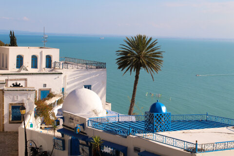
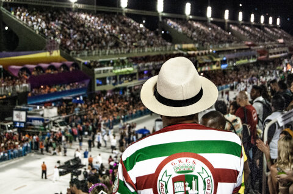
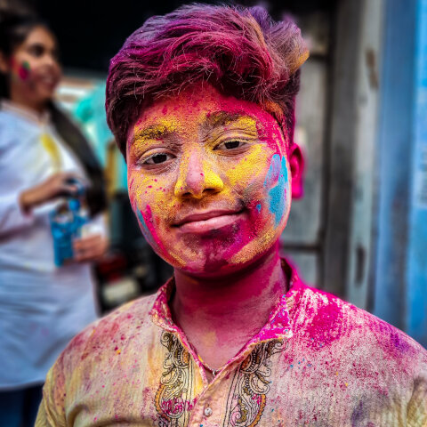
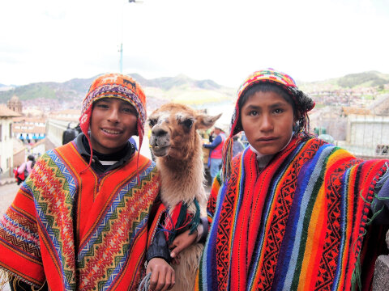
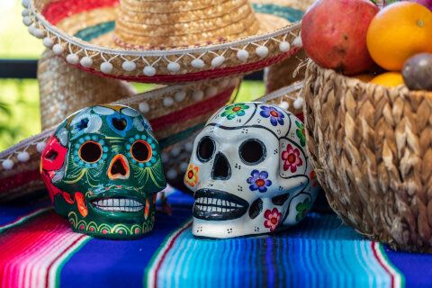
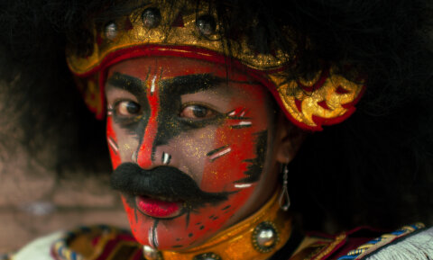
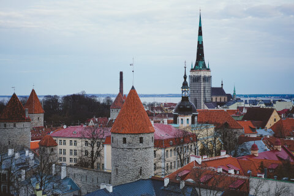

In the spirit of inclusion
The Colorizer spotlights lesser-known cultural places and things that deserve more attention. Because we want to emphasize the unique beauty of every culture on earth. When tourism meets curiosity, a colorful parade appears.